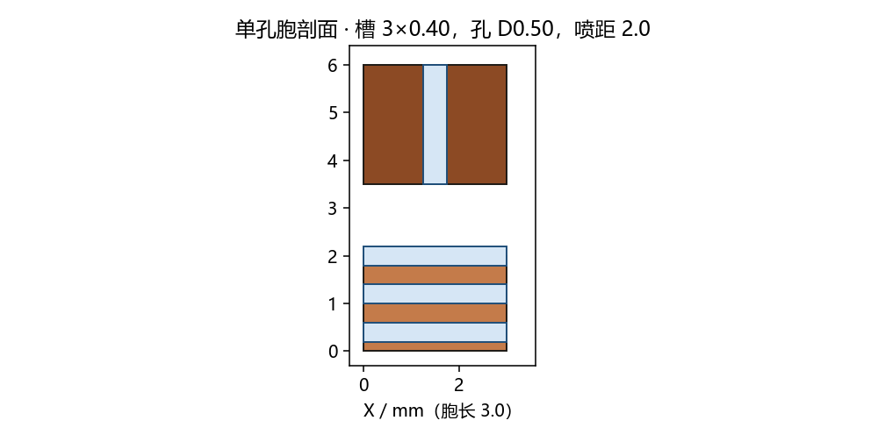

参数化内核 cad/coldplate 只有一个节距，建不出 Sx=3.0、Sy=2.4。这一轮的实体由 build_cad.py 按 model.py 直接生成，不改冻结的 v1.0 yaml（128 孔、节距 3.0）。

零件
| 零件 | 内容 |
|---|---|
| 底板 | 本体 95×75×3.5 mm，余铜 2.0。导出的 STEP 含隔离肋，包围盒高度因此是 5.5 mm。每 die 短槽沿 Y 共 35 条、宽 0.40、深 1.5、节距 0.80，沿 X 分成 4 段。两侧 HBM 各 8 条 0.60 mm 平槽。 |
| 喷嘴板 | 厚 2.5 mm。216 个 D0.50 直孔。不打抽吸孔，一维模型没有这个直径。 |
| 钎缝框 | 周边 0.5 mm，把外形收到 8.5 mm。 |
| 单孔胞 | 3.0×2.4 mm。一版 D0.50，对应一维；一版 D0.40，对应已收敛网格的孔径。 |
文件
| 文件 | 大小 |
|---|---|
cell_d040_assembly.step | 79 KB |
cell_d040_base.step | 58 KB |
cell_d040_lid.step | 19 KB |
cell_d050_assembly.step | 79 KB |
cell_d050_base.step | 58 KB |
cell_d050_lid.step | 19 KB |
plate_assembly.step | 5475 KB |
plate_base.step | 4551 KB |
plate_nozzle.step | 839 KB |
plate_seal.step | 29 KB |
STEP 回读核对：总装包围盒 95.000 × 75.000 × 8.500 mm，体积 41848 mm³。喷嘴板比同外形实心板少约 106 mm³，与 216 个 D0.50、深 2.5 mm 的孔体积一致。两个单孔胞装配高度都是 8.0 mm（不含 0.5 mm 钎缝）。
装配顺序在结构页。OCC 若段错误，脚本会重试；冻结 yaml 和 cad/out 不写入。